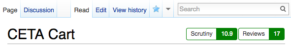
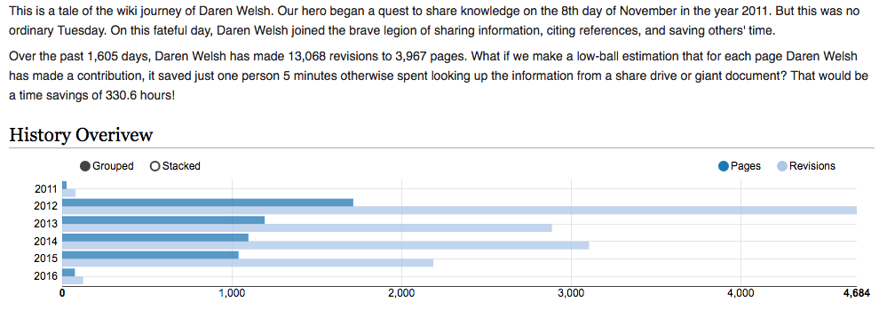
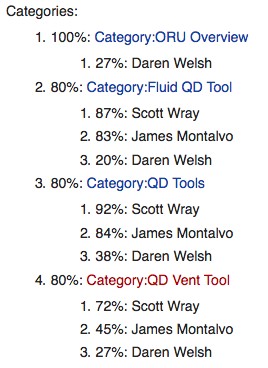

Analyzing a Knowledge Management System
and its Users
James Montalvo - Scott Wray - Daren Welsh
Costa Mavridis - Stephanie Johnston - Brian Alpert
(Use arrow keys to navigate)
Pending Reviews

How well are we doing with reviewers?

Watch Suggestions

Page Scores

Comparing Timeliness of Reviewers

Comparing Contributions of Reviewers

Comparing Contributions of Reviewers

User History
User Classification

User Similarity Matching

Wiki Diversification

Evolution of a page